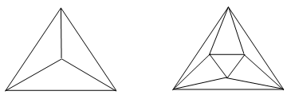

a) Can 4 points be placed on a plane so that each of them is connected by segments with three points $($without intersections$)$?
b) Can 6 points be placed on a plane and connected by non-intersecting segments so that exactly 4 segments emerge from each point?
See the figure.

Yes, they can.
The projections of a regular tetrahedron and octahedron are depicted on the plane.